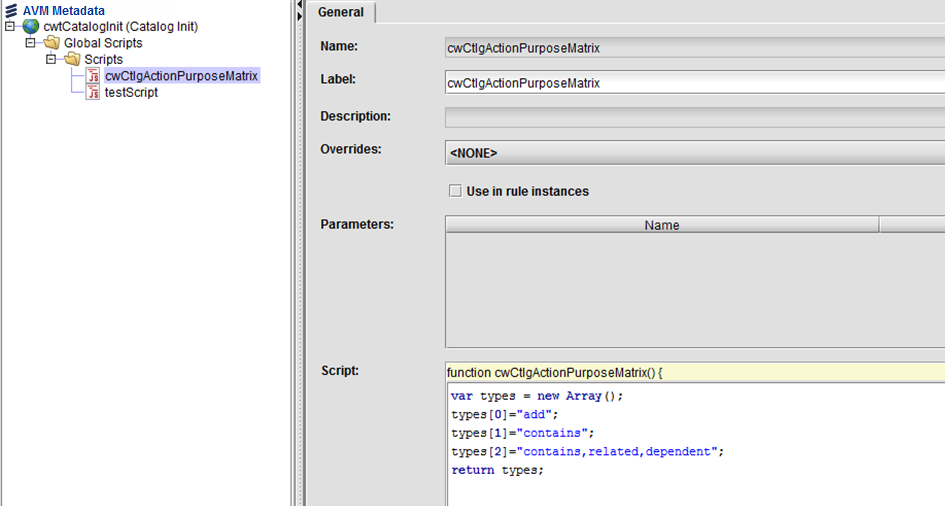

|
To add all related items of a given type to the basket, do the following:
- Create an Extended purpose matrix population script with either <namespace>:<script name> equal to cwtCatalogInit:cwCtlgActionPurposeMatrix or cwtInit:cwCtlgActionPurposeMatrix.
- The script content returns an array that represents the matrix. The following is an example of a relation structure:
p1 -> (related) c1, p1 -> (related) c2, p1 -> (dependent) c3
- To add c1, c2, and c3 into the basket when p1 is added, the following purpose matrix script is created. The target item of the related or dependent type relation is also added.

|